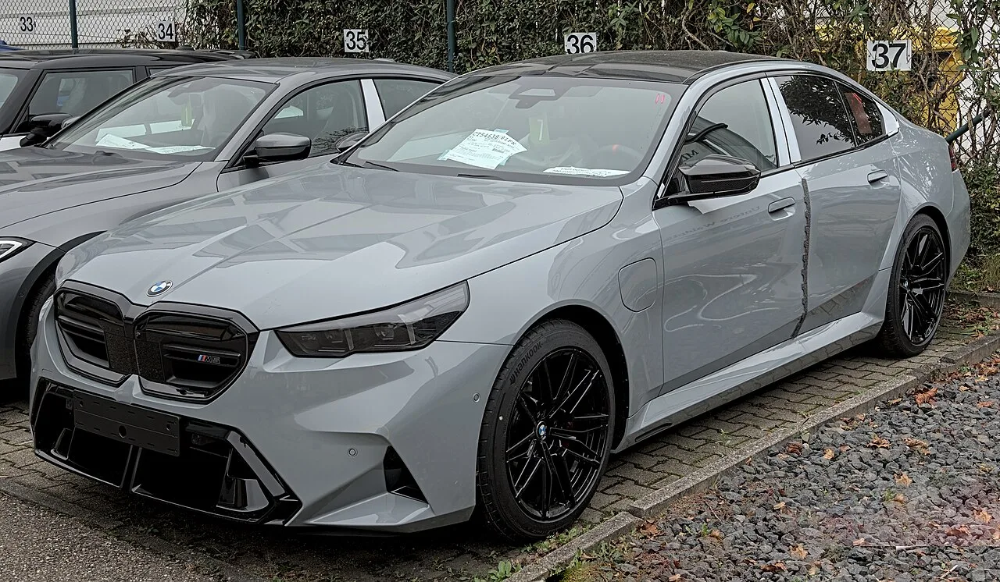

▲ 캐딜락 CT5-V 블랙윙. 6.2리터 슈퍼차저 V8과 후륜구동을 고수해온 이 차는 2026년 모델을 끝으로 단종된다
1. 4개월 남은 '마지막 아날로그' 세단
캐딜락 CT5-V 블랙윙이 미국 시장에서 순수 후륜구동 V8 스포츠 세단의 마지막 명맥을 잇고 있다. 2026년 9월 현재 기준으로 이 차를 새 차로 살 수 있는 시간은 약 4개월 정도 남은 것으로 알려졌다. 2026년 모델 연식이 마지막이 될 예정이며, 이후에는 딜러 재고와 중고차 시장을 통해서만 구할 수 있게 된다.
CT5-V 블랙윙은 2022년형으로 처음 출시됐다. 2019년 단종된 CTS-V의 정신적 후속 모델로 개발됐으며, 캐딜락이 V-시리즈 최상위 라인업에 부여하는 '블랙윙' 배지를 CT4-V와 함께 최초로 달았던 모델이다.

▲ CT5-V 블랙윙의 전신 격인 캐딜락 CTS. 2019년 CTS-V 단종 이후 그 후속으로 개발된 것이 CT5-V 블랙윙이다 ⓒ Wikimedia Commons
2. 6.2리터 슈퍼차저 V8, 668마력
CT5-V 블랙윙의 심장은 6.2리터 슈퍼차저 V8 엔진으로, 최고출력 668마력과 최대토크 659lb-ft(약 91.1kgf·m)를 낸다. 변속기는 6단 수동이 기본이며, 10단 자동변속기를 옵션으로 고를 수 있다. 최근 고성능 세단들이 터보차저와 하이브리드 시스템, 사륜구동으로 옮겨가는 흐름과는 정반대의 선택이다. 순수한 자연흡기에 가까운 슈퍼차저 방식과 후륜구동만의 조합은, 요즘 신차에서는 점점 보기 어려워진 조합이다.
| 항목 | 사양 |
|---|---|
| 엔진 | 6.2L 슈퍼차저 V8 |
| 최고출력 | 668마력 |
| 최대토크 | 659lb-ft(약 91.1kgf·m) |
| 변속기 | 6단 수동(기본) / 10단 자동(옵션) |
| 구동방식 | 후륜구동(RWD) |
| 기본 가격(MSRP) | 10만 695달러(목적지비 포함) |
📍 참고로 알아두면 좋은 것
'블랙윙'은 캐딜락이 V-시리즈의 최상위 고성능 모델에 붙이는 서브 브랜드명이다. CT4-V 블랙윙(트윈터보 V6)과 CT5-V 블랙윙(슈퍼차저 V8)이 있으며, 두 모델 모두 수동변속기를 기본 제공하는 몇 안 되는 현행 신차로 꼽혀왔다.
3. 왜 지금 단종인가 — 경쟁 모델들의 전환
CT5-V 블랙윙의 단종은 고성능 세단 시장 전체의 흐름과 맞물려 있다. 대표적인 경쟁 모델인 BMW M5는 이제 터보차저 V8에 하이브리드 시스템을 결합하고, 구동방식도 상시 사륜구동(xDrive)으로 바뀌었다. 메르세데스-AMG와 아우디 RS 라인업 역시 전동화 보조 파워트레인과 사륜구동을 기본으로 삼는 방향으로 가고 있다. 이런 흐름 속에서 순수 후륜구동에 자연흡기에 가까운 슈퍼차저 V8, 수동변속기까지 고수하는 CT5-V 블랙윙은 사실상 마지막 '올드스쿨' 스포츠 세단으로 남게 된 것이다.

▲ 현행 BMW M5(G90). 터보차저 V8에 하이브리드 시스템과 상시 사륜구동을 결합해 CT5-V 블랙윙과는 정반대의 길을 걷고 있다 ⓒ Wikimedia Commons
캐딜락 입장에서도 배출가스 규제 강화와 전동화 전환이라는 큰 흐름 속에서, 대배기량 슈퍼차저 엔진을 그대로 유지하는 것은 갈수록 부담이 커지는 선택이었을 것으로 보인다.

▲ 형제 모델인 CT4-V 블랙윙. 트윈터보 V6를 탑재한 이 모델 역시 CT5-V 블랙윙과 함께 단종 수순을 밟고 있다 ⓒ Wikimedia Commons
4. 가격 — 프리미엄이 붙은 마지막 물량
CT5-V 블랙윙의 기본 가격은 목적지비 포함 10만 695달러이지만, 단종을 앞두고 실제 딜러 판매가는 이보다 훨씬 높게 형성되고 있다. 미국 일부 딜러의 경우 11만 5,420달러에서 많게는 13만 9,944달러, 심지어 16만 달러를 넘는 가격표가 붙은 사례도 확인됐다. 반면 이미 운행 중인 중고 개체의 평균 시세는 9만 9,152달러 수준으로, 신차 프리미엄이 붙은 매물보다 오히려 저렴하게 거래되는 역전 현상도 나타나고 있다.
✅ CT5-V 블랙윙 단종, 이것만은 확인하세요
· 2026년 모델 연식을 끝으로 단종, 신차 구매 가능 기간은 약 4개월 남음
· 6.2L 슈퍼차저 V8, 668마력·659lb-ft, 6단 수동 기본
· 경쟁 모델(BMW M5 등)은 터보+하이브리드+사륜구동으로 전환한 상태
· 기본가 10만 695달러이나 실제 딜러가는 최대 16만 달러 이상까지 형성
· 차기 CT5는 2028년(2029년형) 출시 예정, 새 블랙윙은 2031년경 가능성 거론
5. 다음 세대 CT5와 블랙윙의 미래
캐딜락은 차기 CT5를 2028년경(2029년형) 새롭게 선보일 예정으로 알려졌다. 다만 이 차세대 CT5가 지금과 같은 순수 내연기관 V8 후륜구동 방식을 유지할지는 불투명하다. 업계에서는 새로운 블랙윙 모델이 등장하더라도 2031년 전후가 될 것이며, 전동화 보조 파워트레인이 결합될 가능성이 거론되고 있다. 결국 지금의 CT5-V 블랙윙은 '내연기관 순정 후륜구동 V8 세단'이라는 한 시대의 마지막 페이지로 남을 공산이 크다. 재고 현황과 딜러 정보는 캐딜락 공식 홈페이지에서 확인할 수 있다. 바로가기

▲ 서킷을 달리는 블랙윙 라인업. 순수 후륜구동 V8 스포츠 세단이라는 조합은 이번 세대를 끝으로 당분간 보기 어려워질 전망이다 ⓒ Wikimedia Commons
6. 정리
캐딜락 CT5-V 블랙윙은 6.2리터 슈퍼차저 V8과 순수 후륜구동, 6단 수동변속기까지 고수해온 미국의 마지막 아날로그 스포츠 세단이다. 경쟁 모델들이 터보·하이브리드·사륜구동으로 전환한 사이 홀로 옛 방식을 지켜왔지만, 2026년 모델을 끝으로 약 4개월 뒤면 더 이상 새 차로 살 수 없게 된다. 차기 CT5와 새로운 블랙윙이 어떤 파워트레인으로 돌아올지는 아직 불투명한 만큼, 지금이 이 조합을 만나볼 수 있는 사실상 마지막 기회로 여겨진다.